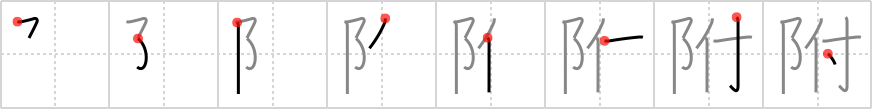

附
← →
affixed

Reading:
On-Yomi: フ — Kun-Yomi: つ.ける、つ.く
Heisig story:
Pinnacle . . . adhere.
Koohii stories:
1) [ruuku35] 12-6-2006(153): A sign was AFFIXED on the PINNACLE of the Acropolis so that tourists would ADHERE to the rules.
2) [xentropic] 27-7-2008(68): Signs are affixed to walls in The Pinnacle to ensure tourists adhere to the rules.
3) [dingomick] 27-8-2007(60): The Pinnacle is firmly affixed to the top of the mount with bubble gum. (adhere (#1000 付)).
4) [Meconium] 1-6-2009(14): At The Pinnacle, they use the best quality glue to make sure things adhere properly. If you see a sign adhered to the wall of The Pinnacle, don't bother trying to steal it - it's firmly affixed.
5) [haole] 15-2-2010(10): Being affixed is really the pinnacle of adherence.